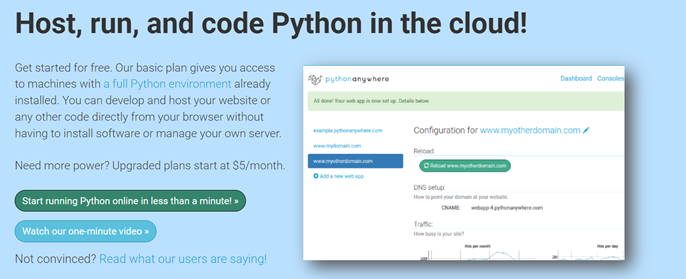
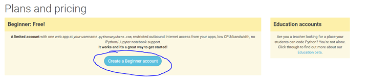
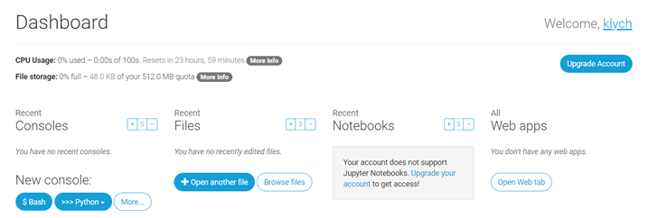
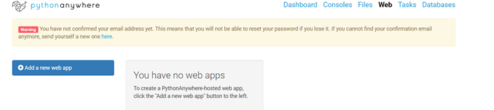
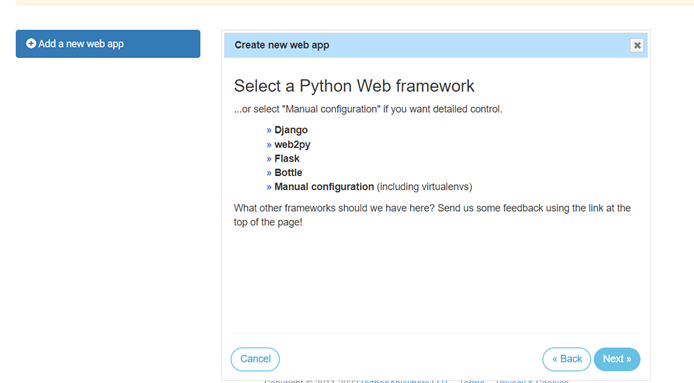
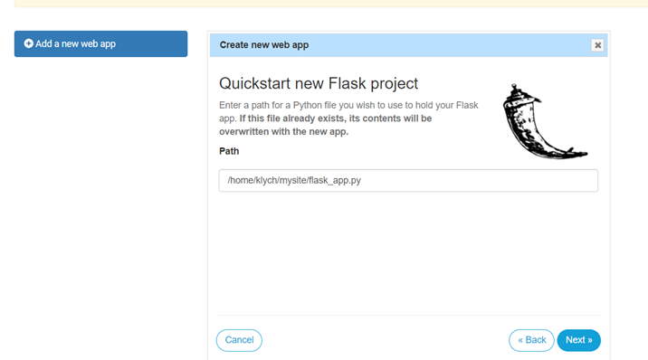
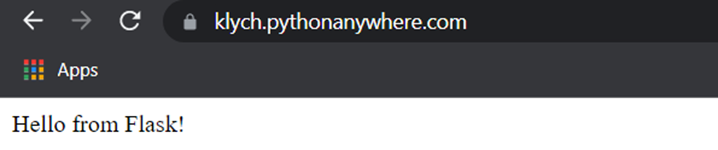

Setting Up PythonAnywhere
Setting up Python Flask on a hosting service – Python Anywhere. To use the functionality of the following website, we first need to sign up – follow the link https://www.pythonanywhere.com/ and click the green button “Start running Python online in less than a minute!”

After that, click on the create a beginner account button at the top left of the webpage:

After you put in your details and complete the sign-up process, you will see the dashboard – note that the username will determine the domain name of your website, so choose carefully.

At the top right-hand corner, press the “Web” tab, and add a new web app:

Then click next and select “flask” as the framework, this will install all of the necessary flask files in order for it to run.

Then choose python 3.9 and keep the default path, the reason why we are keeping the default path, so you can easily follow along with the guide without guessing.

Now, to view your very own flask app, go into the web tab, and click blue hyperlink with your “username.pythonanywhere.com”.
This should bring you to this screen in a new tab:

Congratulations! You have successfully created your first Flask application without typing a single line of code! Cool right? Well, let’s do it manually!